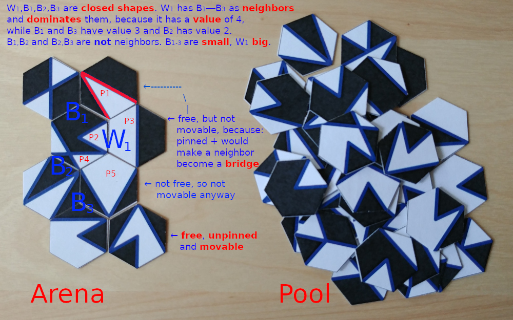
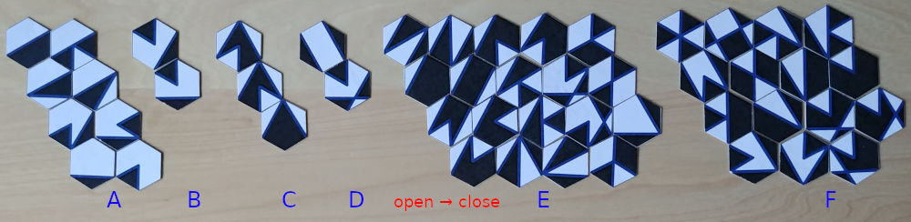
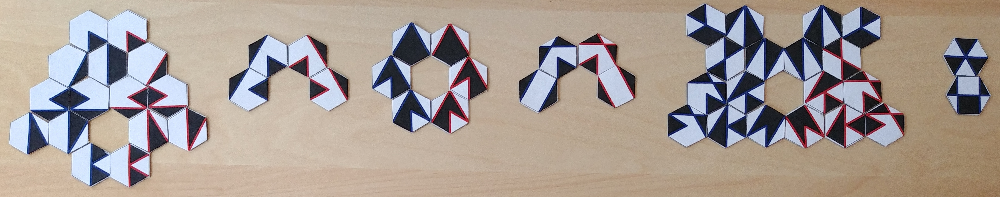
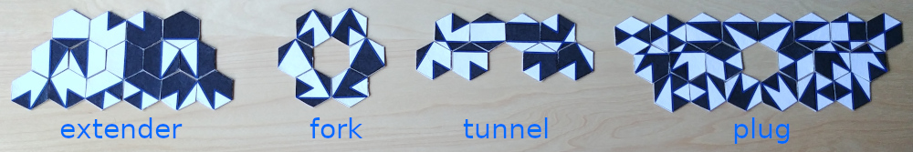

Advaya
An abstract tile-based board game for 2 players
Advaya is an abstract region-forming tile placement game with complete information for two players that is played with a set of 49 hexagonal tiles [PDF] and is inspired by Carcassone and Hive. Like in Carcassone, you get points for closing regions. Like in Hive, the pieces are hexagonal and can be moved after placing them.
{kind=link}
The Advaya tile set was developed as fusion of both practicality and mathematical beauty. For people interested in such things, I sketch the development and the reasoning behind the tiles in a separate article. Advaya means “non-dualism” in Sanskrit and is a fitting name, because light and dark create each other and are just two aspects of the same tile…
(For a version for up to three players with a larger, but more regular and less artistic tile set, check out Advaya’s sister game Atreya!)
Advaya Rules
The rules are preliminary, feel free to experiment with them!
First we need some simple terminology that is partially illustrated in this image:
A tile is one of the hexagonal cards, on which multiple pieces in black and white can be seen. Pieces of different color are separated by the boundary (the blue or red lines).
From the pool of unplayed tiles a tile is played by validly placing it as a neighbor next to other tiles in the arena, which always must stay bi-connected, meaning that each tile in the arena can be reached by a sequence of neighbors and removing any tile does not make the arena fall apart. The arena has a hole if there is an area of missing tiles that is fully surrounded by tiles. The arena is valid if it is bi-connected and has no holes.
A shape is a connected area of the same color that spans over multiple tiles and consists of multiple pieces. Notice that a shape can contain more than one piece from the same tile. A shape is closed if it is completely surrounded by the boundary of blue or red lines (possibly mixed). The value of a closed shape is the number of pieces with blue boundary. A shape with a value less than 4 is small, otherwise it is big. Shapes are neighbors if they share a boundary segment, whereas shapes that touch only in a single point are not neighbors. A shape dominates a neighboring shape if it has strictly larger value.
A tile is pinned if at least one of its pieces is part of any closed shape. A tile is free if it can be moved to a different location or orientation by sliding it on the table without moving any other tiles, i.e., it needs to have two adjacent sides without a neighbor so it can fit through. All tiles in the pool are movable. A tile in the arena is movable if it is unpinned and free.
Preparation
Decide which player owns which color (black or white) and who will start.
Place the I tile (half black, half white) as the starting tile of the arena.
This is the seed from which the tapestry of shapes will grow.
Place all the other tiles to the side, forming the pool of tiles for both players.
Objective of the game
There are multiple variants of the game that can be played.
First Closed:
First player closing a big shape of their color wins.
This yields a game somewhat similar to Palago, but with a different tile set and feeling to it.
Max Closed:
Each player tries to maximize the total value of all closed big shapes of their color (i.e., small shapes give no points). Every time a big shape is closed, its value is added to the score of the player of the shape’s color.
This is a more Carcassonnesque variant that allows for some long-term planning.
Domination:
Like Max Closed, but when a big shape is closed by a player, then the player only gets points for the shape if it is not dominated. Additionally, the player gets bonus points for neighboring shapes (big or small) that were already closed and become dominated by player’s shape at the time it is closed.
Example: In the image above, if shape $W_1$ is closed after $B_1$, $B_2$, $B_3$ were closed, then player white gets $4+3+3+2 = 12$ points, because $B_1$, $B_2$, $B_3$ are dominated by $W_1$. On the other hand, if e.g. $B_1$ is closed at the same time or after $W_1$, then nobody gets points for the shape $B_1$.
The new rules add an additional layer of strategy, as now closed shapes and their location still matter after the initial scoring and also the creation of larger shapes is incentivized.
First Capture:
First player closing a big shape of their color that uses a piece of the start tile wins.
By requiring to capture the initial tile, all other shapes become auxiliary mechanisms that help to stabilize your target shape. A game is longer and feels less tight than First Closed.
Max Capture:
Player with higher-valued closed big shape that includes a piece of the start tile wins.
This variant of capture makes the decision to close the capturing shape a strategic one, because afterwards the other player still can win by building a larger shape.
Allowed moves
Place or move a movable tile to a new position in the arena, while ensuring that:
-
The colors of neighboring tiles must match on the shared borders.
-
The arena must remain valid without the tile (during the move) and with the tile at the new location (after the move).
-
You must not use the same tile that the other player used in the previous move.
-
Your move must be possible by sliding the tile carefully from its initial to its new position or orientation, without requiring to move any other tiles in the arena[1].
(Practically, of course you may lift the tile up to do your move.)
The tile may also be flipped around during the move. The red boundary is to be treated like the blue one for closing shapes, the color only matters for the value and for distinguishing front- and backsides.
To avoid possible mistakes and have a better overview you can mark the capture target tile (if applicable), pinned tiles, and the last moved tile with different tokens.
Game end and determining the winner
In the First variants, the game ends regularly when the first winning shape is closed. If this happens for both players simultaneously, then the player with the higher valued shape wins. If both are equally valued, it is a draw.
In all other variants the winner is determined by the larger score and the game ends regularly if no progress is possible anymore, where progress means that a tile from the pool is played or a new shape is closed[2].
The game may be ended prematurely, if the players agree to do so. In First variants this always results in a draw, while in the other variants the result is determined by the score based on the current arena state.
The stagnation rule must be activated and states that, after activation, the game ends when no progress was made for more than 6 moves (3 by each player). In case of a game ending due to this rule the winner is determined in the same way as if both players agreed to end the game.
A player can invoke the stagnation rule after 48 moves in total or at least 12 moves without progress. When playing in a competitive sports setting, the stagnation rule is to be activated automatically if one of those conditions holds to ensure game termination. Both players together can agree to activate the rule at any time to accelerate the game (as an alternative to ending it immediately).
To track progress, you can use a token with a piece of paper with Progress, 1, 2, 3, 4, 5, 6, END fields. Move the token to the right on each move without progress and reset it to the start whenever progress was made. This way, you only need to remember to update the token on each move.
Warming up: Single player exercises
- To familiarize yourself with the tile set, play out the tiles according to the rules (without any scoring) until a final configuration is reached. Try to make sure that in the end every tile is pinned and the arena has a neat shape, like this:
- Try to connect all tiles into one white and one black closed shape, i.e. only
tiles with pieces pinned to those shapes may stay in the arena. Here is one
solution that is almost perfectly symmetric (as much as possible,
treating
N/Sand*/Has partners). It is not bi-connected, but it shouldn’t be difficult to find a solution that is.
- Now do the same, but with a single closed shape. The best I managed without using backsides was 42 (I did not try too hard), I conjecture that it is possible to use all tiles.
Feel free to send me your best solutions, prettiest closed shapes and arenas, and I might present them here, or even create a little gallery.
That is basically all that you really need to know, so if you are impatient, just print out the tiles, craft yourself a set^[ Cut out the templates for the front and back sides along the dashed rectangle and glue them correctly onto both sides of a piece of cardboard of the same size. When done correctly, this makes the front and back sides of the tiles line up perfectly. Be careful when cutting, because scissors can “chew” the cardboard and introduce a little angle, which results in the backside being slightly off, despite flawless preparation.] and have fun exploring this game!
If you have constructive feedback, strategic insights or improvement ideas, don’t hesitate to contact me As the game is new and not very battle-tested, I am sure that some experienced players of this kind of games have something valuable to say.
Some first observations
Stop reading if you care about trying to understand the game on your own.
Shapes: small ≠ useless
Even though small shapes neither give points, nor count for winning, they can be used in a very meaningful way to ultimately fix a tile in the arena by pinning it, so that they in a sense stabilize and even can determine the long-term shape of the arena.
Tiles: opening vs. closing
Concerning the value of individual tiles, it is probably impossible to say that a tile is in general better than another tile, as of course it depends on for whom and in which situation. But another dimension that I believe is conceptually useful to think about is to realize whether a tile is rather a closing tile (for your color), i.e., can only be used to “seal off” a shape, or an opening tile, i.e. by placing it you have more arena boundary of your color to extend your shape, and of course there are tiles that are somewhere between those extremes.
Consider the following picture that sorts the front side of the tiles roughly by their potential of being played in an opening way for white. Group A is clearly opening. Group B is also opening, as it uses up one open edge of a white shape, but adds two. Of course the opponent could do the reverse, but that is why it is sorted by opening potential. Group C is an interesting case, because it depends of the context the tiles are placed into. They can be played in an opening way if matched to tiles that allow the two white pieces to connect. Group D are clearly neutral “tunnel” tiles. Group E can be played in a zig-zagging way to also form a neutral tunnel, but often you need such a tile to close a boundary where you need two consecutive white connections. Finally, group F are the tiles for white which can not be used in any way to enlarge a shape and only can close it. Clearly the same applies to black, using a “color-flipped” picture.
When doing the same classification including the tile backsides, many closing tiles would go to the left, as the corresponding backside has some opening potential, and the resulting classification is the same for both players:
Pool: order in the chaos
It is easy to lose track of the various tiles that are still freely available if the pool is just a soup of tiles. Overlooking a useful tile and lose because of a chaotic pool is annoying. So I think that the pool probably should be somewhat organized by typical tile function, in a way that both players can agree on. My proposal is to sort the tiles into the following four clusters, based on the classification above:
Tactics: First Closed/Capture
Some simple ideas for attacking your opponent and improving your own situation:
-
Close and thereby neutralize opponent shapes before they can grow big.
-
With some luck you might break barely big enough shapes up into smaller ones, as long as the arena is still flexible.
-
Remember that you can move parts of a dangerous shape away, if a tile is movable.
-
Use opening tiles to create more boundary or forks that need to be closed.
-
Use tunnel tiles (categories B and D) to move the open boundary to a position that your opponent can not immediately close, e.g. due to the bi-connectedness.
-
Exploit the current arena situation and place tiles such that the opponent cannot close his shape, because the tile cannot slide in or a hole would appear.
-
Try to pin critical positions of your shape(s). A few well-placed small shapes for pinning (let’s just call them pins) can go a long way in combination with the other rules to protect your target shape from vandalism.
-
In First Closed, if you manage to build two shapes, each one tile away from victory, then you are done. Your opponent usually cannot stop you in two places at once (in some situations it is possible, though). Such situations also arise naturally whenever you leave a shape be for a while and build something else.
-
If you know Hive, then tiles basically move like ants, but with stronger restrictions on the arena connectivity (Hive allows holes and does not require bi-connectedness). ↩
-
It is possible for the pool to be non-empty at the end, but is very unlikely to happen naturally. It took me a while to construct a valid end situation where this happens. I suppose finding an example where two tiles remain that can be placed, but not pinned by any sequence of moves is even more difficult, I did not succeed yet. ↩
{kind=link}